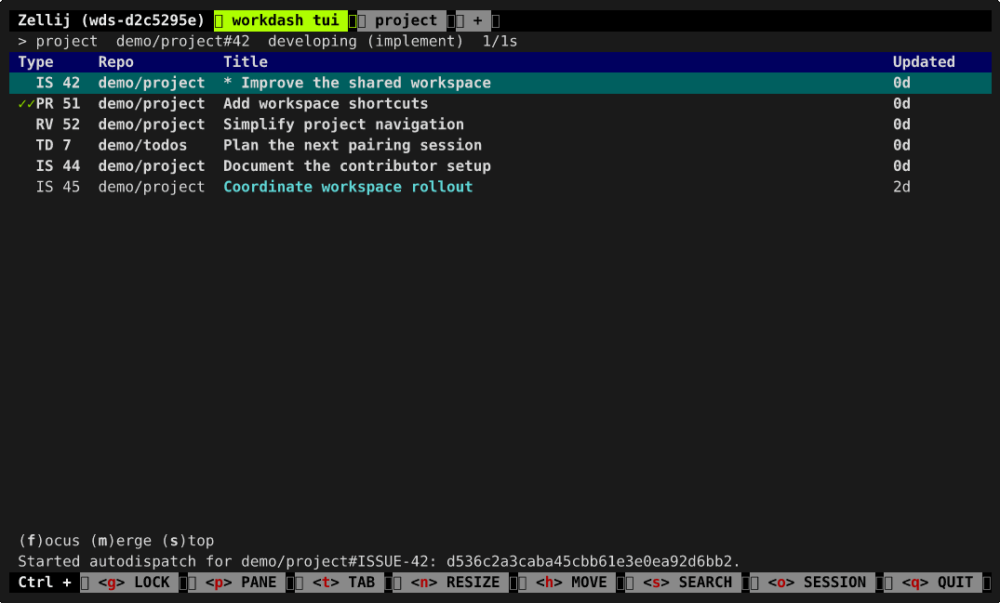

The agentic loop
Delegate the work. Stay in the loop.
Give your agent a set of issues to work through. Follow implementation and review from the same dashboard, and join the agent’s pane when you want to help.
Watch a run ↓A run from start to finish
From issue to merged pull request
Follow the numbered captions. In the dashboard shots, the line above the work list shows what the agent is doing. This demo uses a simulated agent, with merging turned on.


Try it on your own issue: press d and choose an agent that can code and review. Starting directly on an issue can restart work already under way on it.
Watching it work
Follow progress from the dashboard, then enter the pane when you want to participate.
The progress panel follows each issue from coding to review while you keep working. Leave pull requests open for your review, or turn on merging for that session.
Shift+TabFocus progress
Select a session with Up or Down. Use Tab to return to your work table.
fJoin the pane
Focus your selected session's coding or review pane while it is available.
mToggle merging
Enable or disable automerge for your selected running session.
sStop the session
Stop your selected session and remove it from the progress panel.
Start with an issue or a whole repository
Use the dashboard for the issue in front of you. From the CLI, start a loop for a repository or pass an issue to include its sub-issues.
workdash autodispatch owner/repo